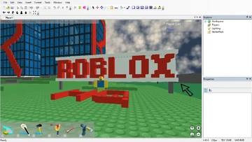

Roblox is a website where people can make and play games. It started in 2006. Now, millions of people play roblox every day.
Roblox was made by David Baszucki and Erik Cassel. At first, it was called DynaBlocks. People could make simple games with blocks.
Roblox Studio started. People could make better games. The first virtual money, Robux, appeared. Roblox got more players.
Big games like Adopt Me! and Jailbreak came out. Roblox had events and parties in the game. More people joined, and roblox already had millions of players daily.
Roblox became big all over the world. You can play in VR, go to concerts, and meet friends. Tens of millions of people play every day.